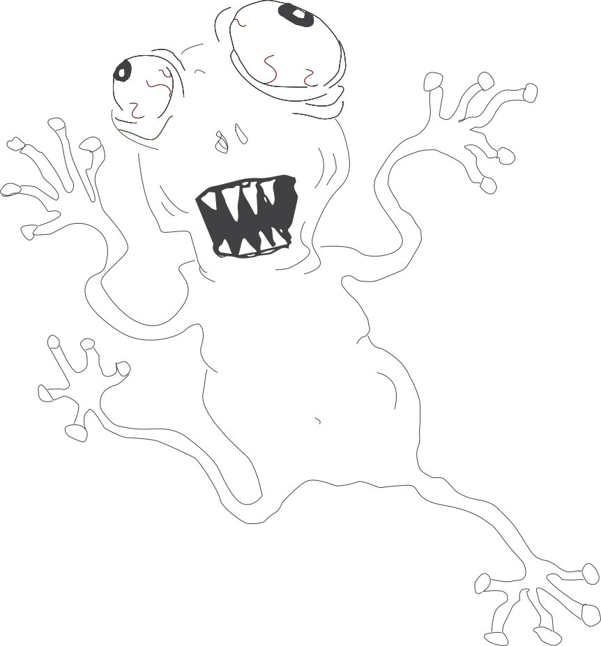

Grundlæggende brugergrænsefladeudvikling
Løsning
Herunder: 04.02.01 - Emergency Site
Proces & Læring
I Tema 3 arbejdede jeg med videreudvikling af en eksisterende brugergrænseflade med fokus på interaktivitet og funktionalitet. Temaet introducerede mig til JavaScript som programmeringssprog samt til arbejdet med SVG-grafik og vektorgrafik i Adobe Illustrator.
Derudover opnåede jeg mere avancerede færdigheder i CSS, som blev brugt til at understøtte både layout og interaktive elementer. I opgaven anvendte jeg JavaScript til at implementere funktioner som popup og accordion, hvor jeg arbejdede med variabler til at skabe mere overskuelig og optimeret kode.
Jeg udviklede og integrerede en SVG-baseret infografik, som skulle kunne manipuleres via JavaScript. Her blev jeg udfordret af, at min SVG var opbygget åbent, hvilket begrænsede mine muligheder for at styre og animere elementerne programmæssigt, men gav mig værdifuld indsigt i, hvor vigtig korrekt struktur og gruppering er i SVG-filer.
Jeg valgte at fokusere på forståelse af JavaScript-logik og sammenhængen mellem HTML, CSS og JavaScript frem for blot at få funktionerne til at virke. Det gav mig en stærkere faglig forståelse af, hvordan interaktive UI-elementer opbygges og vedligeholdes.
Temaet har især styrket mine kompetencer inden for JavaScript, brug af variabler samt opbygning af SVG'filer til webbrug, og denne viden tager jeg med videre som et vigtigt fundament for mere avanceret frontend-udvikling og interaktive løsninger.
Udvalgte delopgaver
Infografik
Form
Animation
accordian og popover.